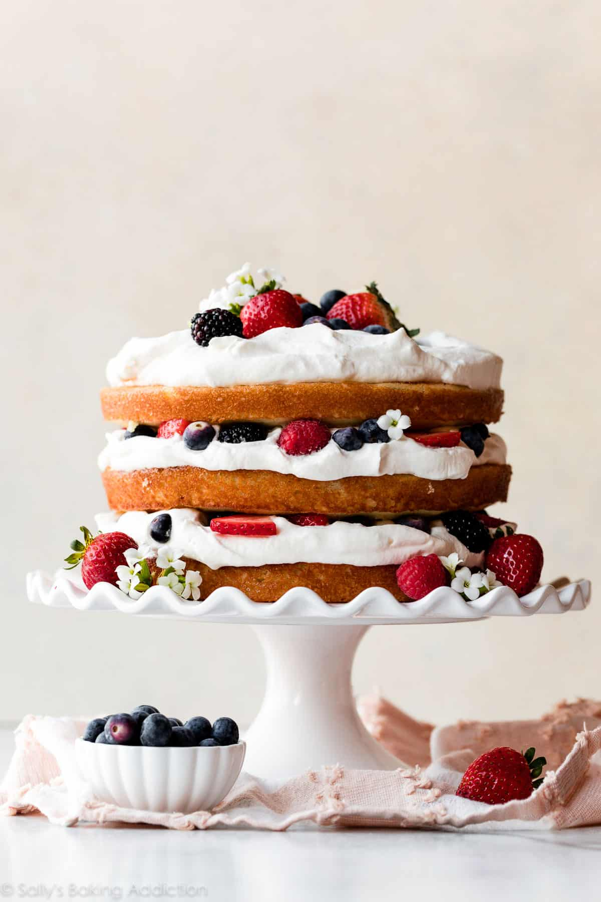

A cake is a baked sweetened dessert with a spongy interior, and is usually layored with either icing or jams(somtimes both) and is decorated with fruit,sprinkles, and/or fondant. One of the first instances of a cake is found in the middle east and southern europe that was made mostly like bread with honey added for sweetmer instead of the sweet treat today. Cakes were originally made for Religious offerings during celebrations and festivals, and would have been almost unrecognizble from the cakes of today. Cakes were also seen as a symble of higher status in medieval europe that were packed with fruits,nuts, and spices. Now that you know what a cake is let's get into what makes a cake.
Now the perfect ingredients are necessary to create the best cake but they also determiane what kind of cake you will get. If you add coco powder you will get a Chocolate cake ,if you add mango you will get a mango cake ,etc. No matter what cake you make you will need these simple ingredients that almost every home-baker will have.
Some recipies might want you to add other thingss like fruits ,nuts ,sprinkles ,milk ,etc. Generally the basic ingrediants listed will make an adverage cake. The best part is that it doesn't require you to have big and pricey stand mixers. All you need is a smaller hand mixers or a whisk and a large bowl depending on the amout of cake mix you plan on making ,you will also need a rubber spatula
The process in which you make a cake is pretty similar not matter who you are following. With the basic steps being put a specific amout of each ingrediant in a bowl and mix,but if you did it like this you might not get the yummy and fluffy cake you desire. So if you follow these short steps you can level up your cake process.
In a bowl you wil need to cream together the butter and the sugar. Start with just mixing the butter and then slowly add the sugar into the butter. Try to do this with soften room temp butter to make this process more easier if you are using a whisk, and it will mix better with the sugar.
Next you will slowly add in the eggs one at a time to ensure that the prvious eggs had been mix properly. we do this to slowly introduce air into the mixture this will make it more fluffy. Be sure not to over mix it or it will have the opposite effect.
In a bowl you will need to mix together the dry ingrediants(flour,salt,baking soda,etc) you don't need to do anything special just lightly mix them together.
Now all you have to do is put the wet ingrediants into the dry ,but before you do you need to know how. For starters you don't just dump the one into the other their is a simple process to insure we keep all that air that we added in step 2. How? By Folding the ingrediants together. You do this by slowly adding in the wet mixter into the dry, and with the spatula you need to scoope the mixtrue from under to over DO NOT STIR. Also be careful not to over mix as like before this will basiclly release the air from the mixture making it more flat and dense(or chewy) which is not the teture you want. This is also the time that you add in nuts ,chocolate chips ,etc.

With decorating your cake you can use almost anything. From frosting ,to fruit , to sprinkles ,etc it just depends on the design that you want. you can also add caramel drips and powder sugar. Whatever you decide the cake is sure to be delicious!
